library(tidyverse)
#Read both Beer and Brewery csv's
beer = read.csv("./Beers.csv", header = TRUE)
breweries = read.csv("./Breweries.csv", header = TRUE)# 1. How many breweries are present in each state?
#All states with most breweries
StateCount = breweries %>% group_by(State) %>% count(State) %>% arrange(desc(n))
#Top Ten States with Values
StateCount%>%
head(10)%>%
ggplot(aes(x=reorder(State,n),y=n, fill=State)) +
xlab("State")+
geom_col() + ggtitle('Top 10 State with the Most Breweries') + geom_text(aes(label = n), vjust = -0.5) + ylab("Number of Breweries")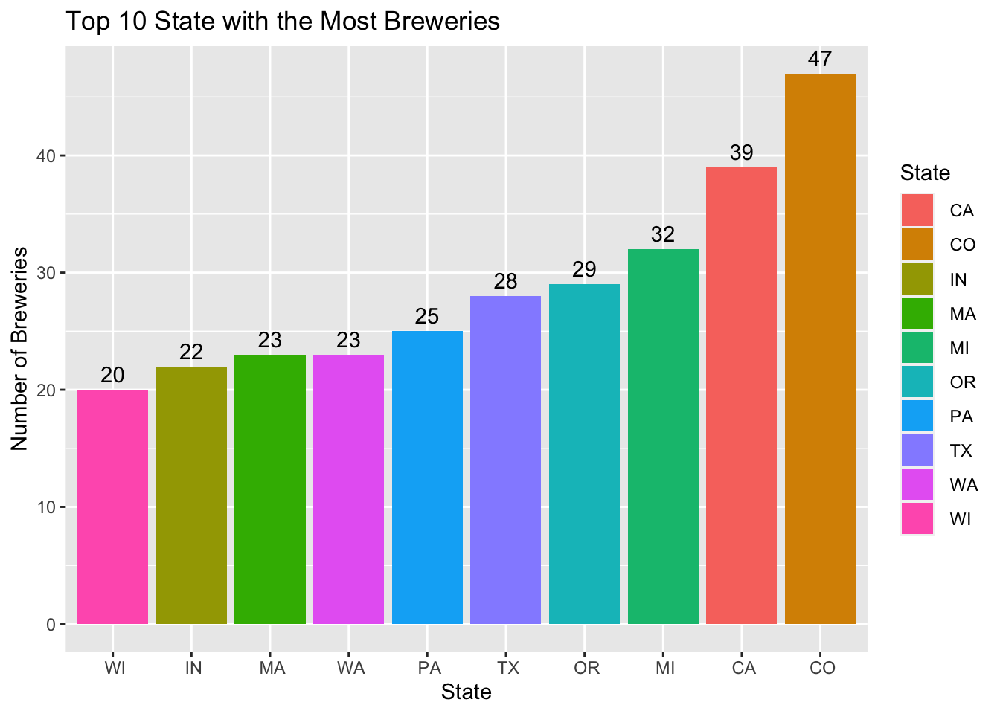
#2. Merge beer data with the breweries data. Print the first 6 observations and the last six observations to check the merged file. (RMD only, this does not need to be included in the presentation or the deck.)
#Merged both datasets on Brewery ID
merged_data = merge(beer, breweries, by.x = "Brewery_id", by.y = "Brew_ID")
#Renamed columns
colnames(merged_data)[2] = "Beer_Name"
colnames(merged_data)[8] = "Brewery_Name"
#Print the first and last six observations
head_merge = head(merged_data,6)
tail_merge = tail(merged_data,6)
#First and last six observations concatenated into one dataframe
head_tail_merge = rbind(head_merge, tail_merge)
head_tail_merge#Address the missing values in each column.
#There are 62 missing values in ABV and 1005 missing values in 1005
library(naniar)
#Visualization of NA Values
gg_miss_var(merged_data)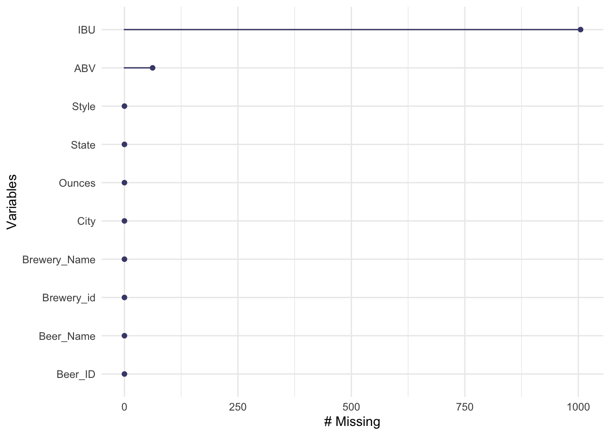
#Display which columns consist of NA values
sapply(merged_data, function(x) sum(is.na(x)))## Brewery_id Beer_Name Beer_ID ABV IBU Style
## 0 0 0 62 1005 0
## Ounces Brewery_Name City State
## 0 0 0 0# 4. Compute the median alcohol content and international bitterness unit for each state. Plot a bar chart to compare.
#Removed the missing values in the ABV and IBU column.
na_merged_data = merged_data %>% filter(!is.na(ABV) & !is.na(IBU))
#Get the median ABV and median IBU.
median_data = na_merged_data %>% group_by(State) %>% summarize(medianABV = median(ABV), medianIBU = median(IBU))
median_data#created a bar chart comparing the medianABV per state
median_data%>%
head(10)%>%
ggplot(aes(x=reorder(State,medianABV),y=medianABV, fill=State)) +
xlab("State")+
geom_col() + ggtitle('Highest Median Alcohol Content by State') + geom_text(aes(label = medianABV), vjust = -0.5) + ylab("Median ABV")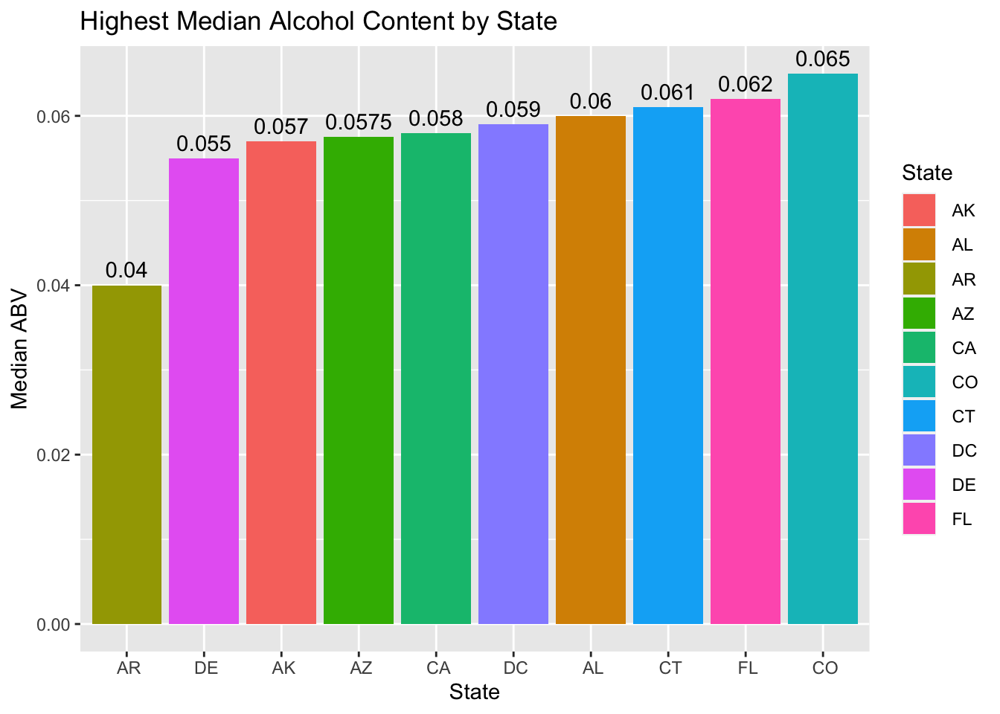
#created a bar chart comparing the medianIBU per state
median_data%>%
head(10)%>%
ggplot(aes(x=reorder(State,medianIBU),y=medianIBU, fill=State)) +
xlab("State")+
geom_col() + ggtitle('Highest Median International Bitterness Unit by State') + geom_text(aes(label = medianIBU), vjust = -0.5) + ylab("Median IBU")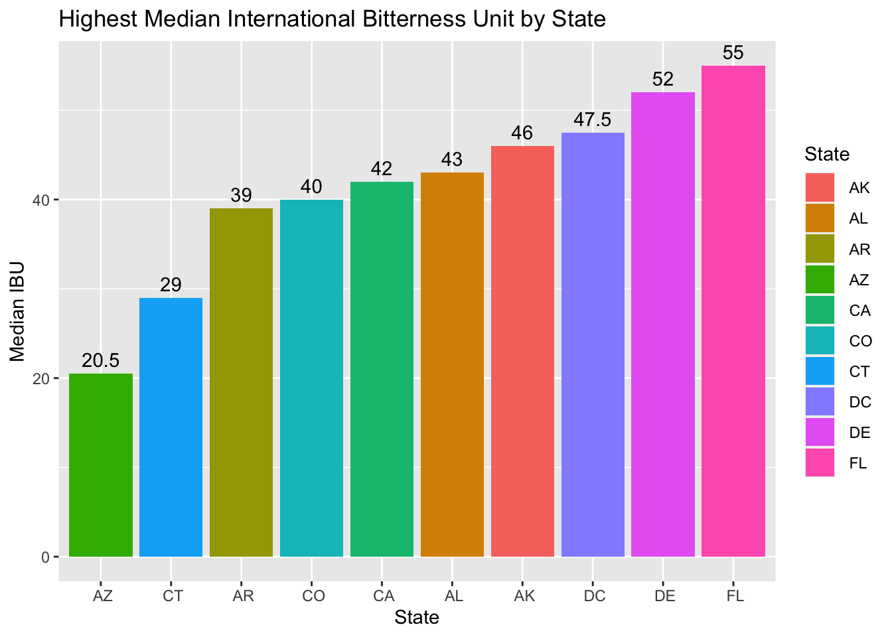
#5.Which state has the maximum alcoholic (ABV) beer? Which state has the most bitter (IBU) beer?
#Get the Max IBU per state
maxIBU = na_merged_data %>% group_by(State) %>% summarise(MaxIBU.per.State = max(IBU)) %>% arrange(desc(MaxIBU.per.State))
#Plot of the top 10 states with the highest IBU
maxIBU %>%
head(5)%>%
ggplot(aes(x=reorder(State,MaxIBU.per.State),y=MaxIBU.per.State, fill=State)) +
xlab("State")+
geom_col() + ggtitle('States with the Highest Max IBU') + geom_text(aes(label = MaxIBU.per.State), vjust = -0.5) + ylab("Max IBU")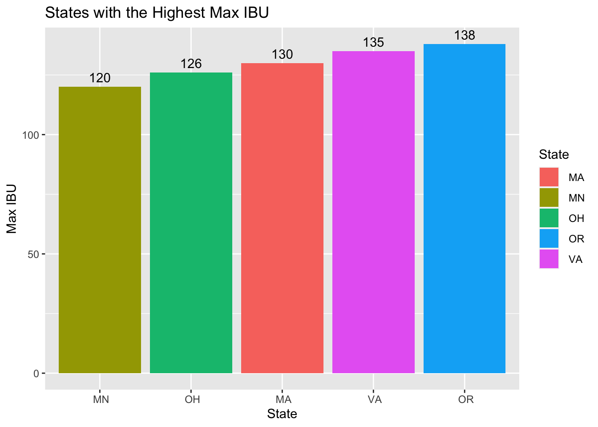
#Get the Max ABV per state
maxABV = na_merged_data %>% group_by(State) %>% summarise(MaxABV.per.State = max(ABV)) %>% arrange(desc(MaxABV.per.State))
#Plot of the top 5 states with the highest IBU
maxABV%>%
head(5)%>%
ggplot(aes(x=reorder(State,MaxABV.per.State),y=MaxABV.per.State, fill=State)) +
xlab("State")+
geom_col() + ggtitle('States with the Highest Max ABV')+ geom_text(aes(label = MaxABV.per.State), vjust = -0.5) + ylab("Max ABV")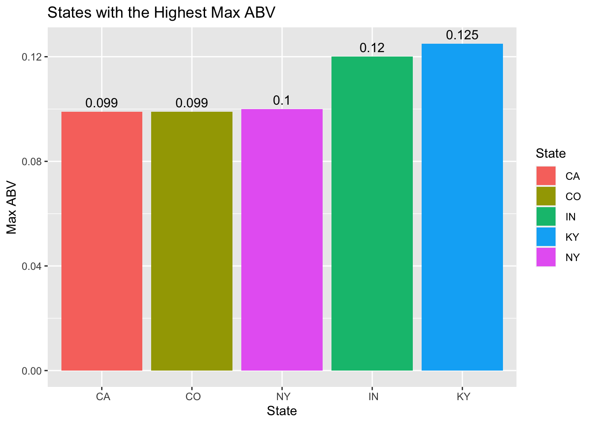
#6. Comment on the summary statistics and distribution of the ABV variable.
summary(na_merged_data)## Brewery_id Beer_Name Beer_ID ABV
## Min. : 1.0 Nonstop Hef Hop : 12 Min. : 1 Min. :0.02700
## 1st Qu.: 95.0 Dale's Pale Ale : 6 1st Qu.: 772 1st Qu.:0.05000
## Median :198.0 Longboard Island Lager: 4 Median :1439 Median :0.05700
## Mean :224.2 1327 Pod's ESB : 3 Mean :1415 Mean :0.05991
## 3rd Qu.:351.0 Boston Lager : 3 3rd Qu.:2069 3rd Qu.:0.06800
## Max. :547.0 Dagger Falls IPA : 3 Max. :2692 Max. :0.12500
## (Other) :1374
## IBU Style Ounces
## Min. : 4.00 American IPA :301 Min. : 8.40
## 1st Qu.: 21.00 American Pale Ale (APA) :153 1st Qu.:12.00
## Median : 35.00 American Amber / Red Ale : 77 Median :12.00
## Mean : 42.71 American Double / Imperial IPA: 75 Mean :13.51
## 3rd Qu.: 64.00 American Blonde Ale : 61 3rd Qu.:16.00
## Max. :138.00 American Pale Wheat Ale : 61 Max. :32.00
## (Other) :677
## Brewery_Name City State
## Oskar Blues Brewery : 32 Portland : 41 CO :146
## Sun King Brewing Company: 32 Indianapolis: 36 CA :135
## Sixpoint Craft Ales : 23 San Diego : 35 IN : 91
## Hopworks Urban Brewery : 22 Brooklyn : 28 TX : 89
## Great Crescent Brewery : 20 Boulder : 26 OR : 87
## Stevens Point Brewery : 20 Aurora : 24 MA : 51
## (Other) :1256 (Other) :1215 (Other):806# Box Plot of ABV, IBU and Ounces
theme_USGS_box <- function(base_family = "serif", ...){
theme_bw(base_family = base_family, ...) +
theme(
panel.grid = element_blank(),
plot.title = element_text(size = 8),
axis.ticks.length = unit(-0.05, "in"),
axis.text.y = element_text(margin=unit(c(0.3,0.3,0.3,0.3), "cm")),
axis.text.x = element_text(margin=unit(c(0.3,0.3,0.3,0.3), "cm")),
axis.ticks.x = element_blank(),
aspect.ratio = 1,
legend.background = element_rect(color = "black", fill = "white")
)
}
#ABV Box Plot
ggplot(na_merged_data, aes( y = ABV)) + geom_boxplot(outlier.colour="red",
outlier.size=2) + ggtitle('ABV Boxplot with Outliers in Red') + theme_USGS_box()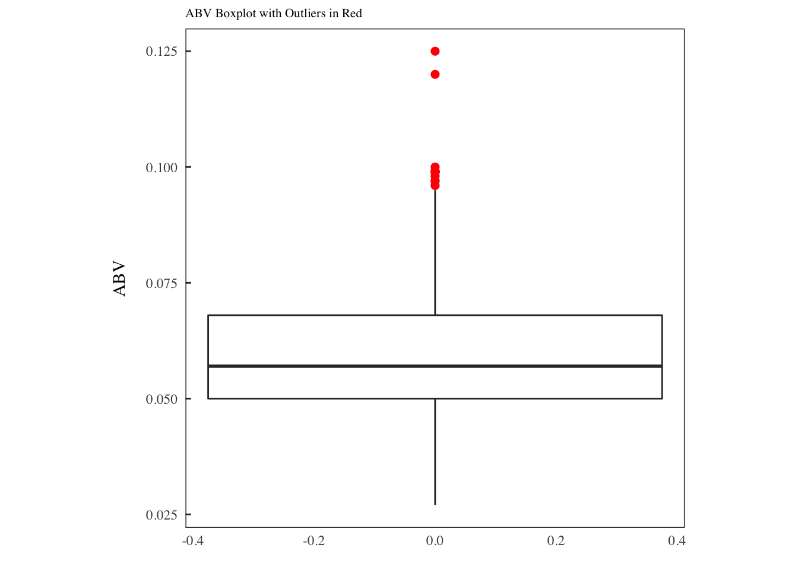
#IBU Box Plot
ggplot(na_merged_data, aes( y = IBU)) + geom_boxplot(outlier.colour="red",
outlier.size=2) + ggtitle('IBU Boxplot with Outliers in Red') + theme_USGS_box()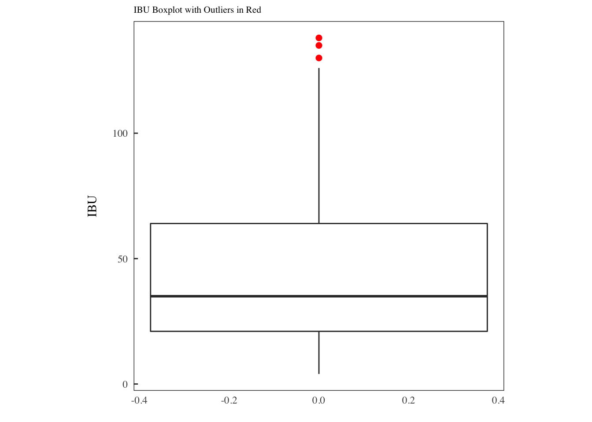
#Ounces Box Plot
ggplot(na_merged_data, aes( y = Ounces)) + geom_boxplot(outlier.colour="red",
outlier.size=2) + ggtitle('Ounces Boxplot with Outliers in Red') + theme_USGS_box()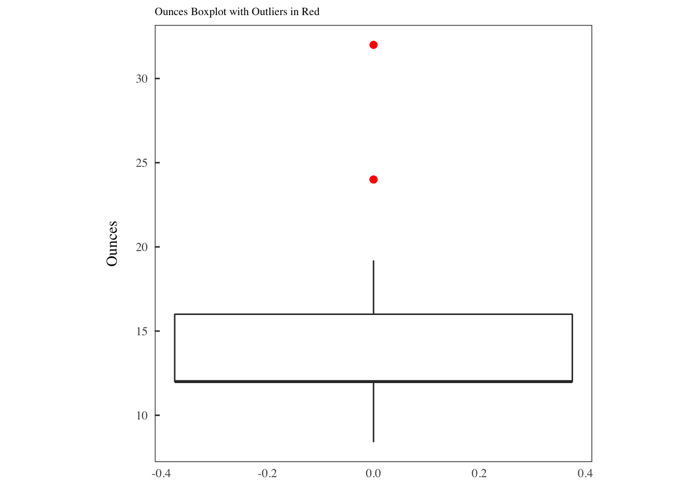
#Histogram of ABV
na_merged_data %>% ggplot(aes(x = ABV)) + geom_histogram(fill = "blue", color = "black") + ggtitle('Distribution of ABV Variable')## `stat_bin()` using `bins = 30`. Pick better value with `binwidth`.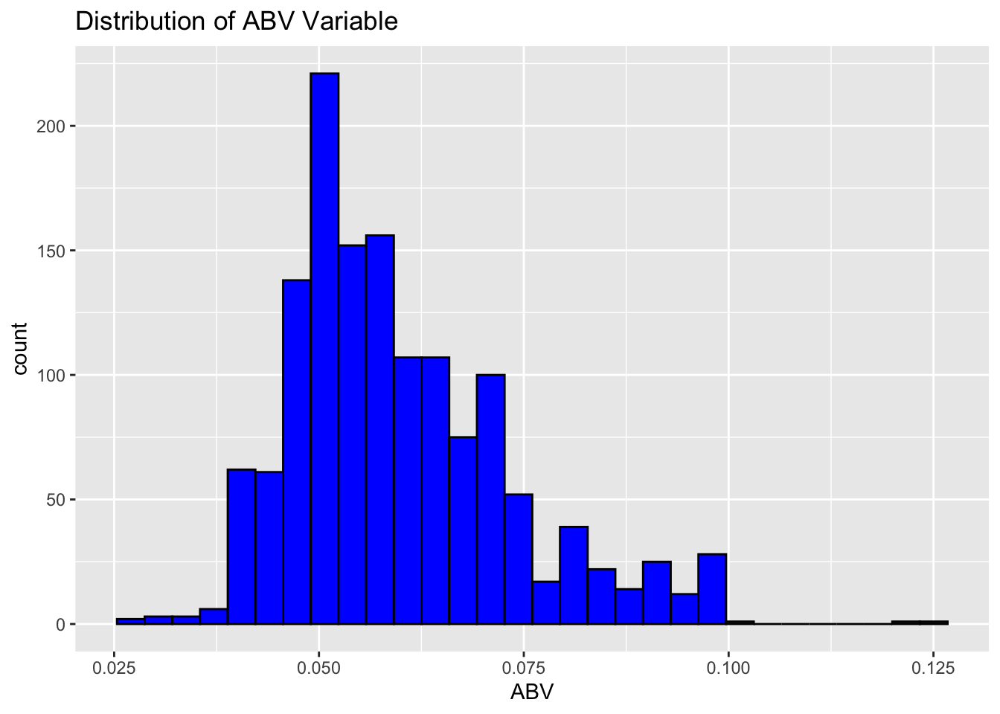
# 7. Is there an apparent relationship between the bitterness of the beer and its alcoholic content? Draw a scatter plot. Make your best judgment of a relationship and EXPLAIN your answer.
#Scatter plot of ABV vs. IBU
na_merged_data %>% ggplot(aes(x = ABV, y = IBU)) + geom_point() + geom_smooth(method='lm') + ggtitle('Relationship between ABV and IBU')## `geom_smooth()` using formula 'y ~ x'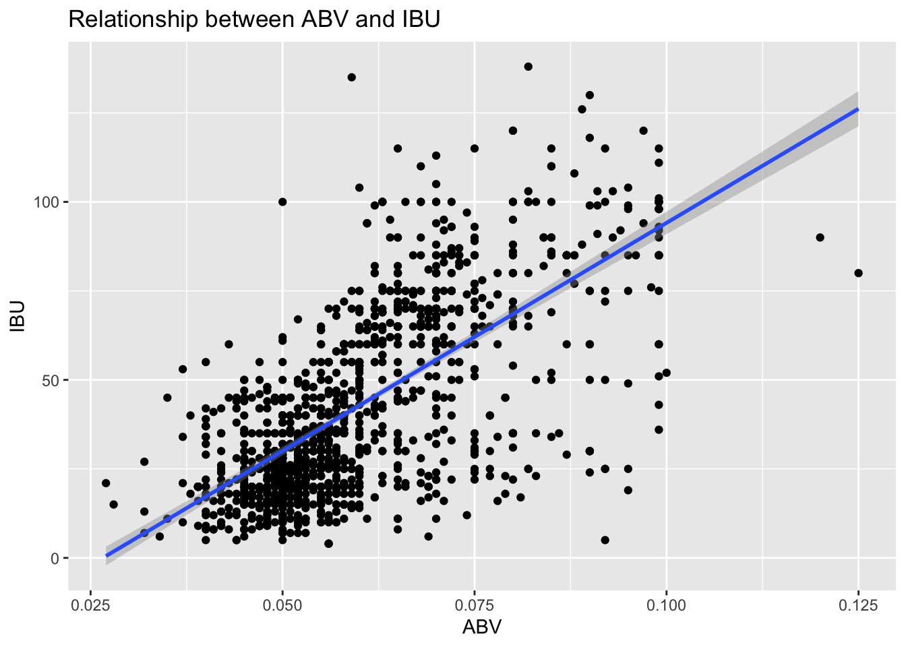
# 8. Budweiser would also like to investigate the difference with respect to IBU and ABV between IPAs (India Pale Ales) and other types of Ale (any beer with “Ale” in its name other than IPA). You decide to use KNN classification to investigate this relationship. Provide statistical evidence one way or the other. You can of course assume your audience is comfortable with percentages … KNN is very easy to understand conceptually.
library(class)
library(caret)
library(e1071)
library(plyr)## ----------------------------------------------------------------------------------------## You have loaded plyr after dplyr - this is likely to cause problems.
## If you need functions from both plyr and dplyr, please load plyr first, then dplyr:
## library(plyr); library(dplyr)## ----------------------------------------------------------------------------------------##
## Attaching package: 'plyr'## The following objects are masked from 'package:dplyr':
##
## arrange, count, desc, failwith, id, mutate, rename, summarise, summarize## The following object is masked from 'package:purrr':
##
## compact#Used grepl to find and rename all India Pale Ales to IPA
#Then used grepl to find and rename all Ales to Other Ale
#Every other type of beer is renamed
knn_data = na_merged_data %>%
mutate(Ale_Type = case_when(
grepl("IPA",na_merged_data$Style)==TRUE ~ "IPA",
grepl("Ale",na_merged_data$Style)==TRUE ~ "Other Ale",
TRUE ~ "other"
)
)
#Filtered to keep the IPA and Other Ale's for training/test data.
knn_select_data = knn_data %>% filter(Ale_Type=="IPA" | Ale_Type=="Other Ale")
#Using a train/test ratio of 75-25, looping for many k and the average of training/test partitions.
set.seed(6)
splitPerc = .75
iterations = 100
numks = 30
masterAcc = matrix(nrow = iterations, ncol = numks)
for(j in 1:iterations)
{
accs = data.frame(accuracy = numeric(30), k = numeric(30))
trainIndices = sample(1:dim(knn_select_data)[1],round(splitPerc * dim(knn_select_data)[1]))
train = knn_select_data[trainIndices,]
test = knn_select_data[-trainIndices,]
for(i in 1:numks)
{
classifications = knn(train[,c(4,5)],test[,c(4,5)],train$Ale_Type, prob = TRUE, k = i)
table(classifications,test$Ale_Type)
CM = confusionMatrix(table(classifications,test$Ale_Type))
masterAcc[j,i] = CM$overall[1]
}
}
MeanAcc = colMeans(masterAcc)
plot(seq(1,numks,1),MeanAcc, type = "l")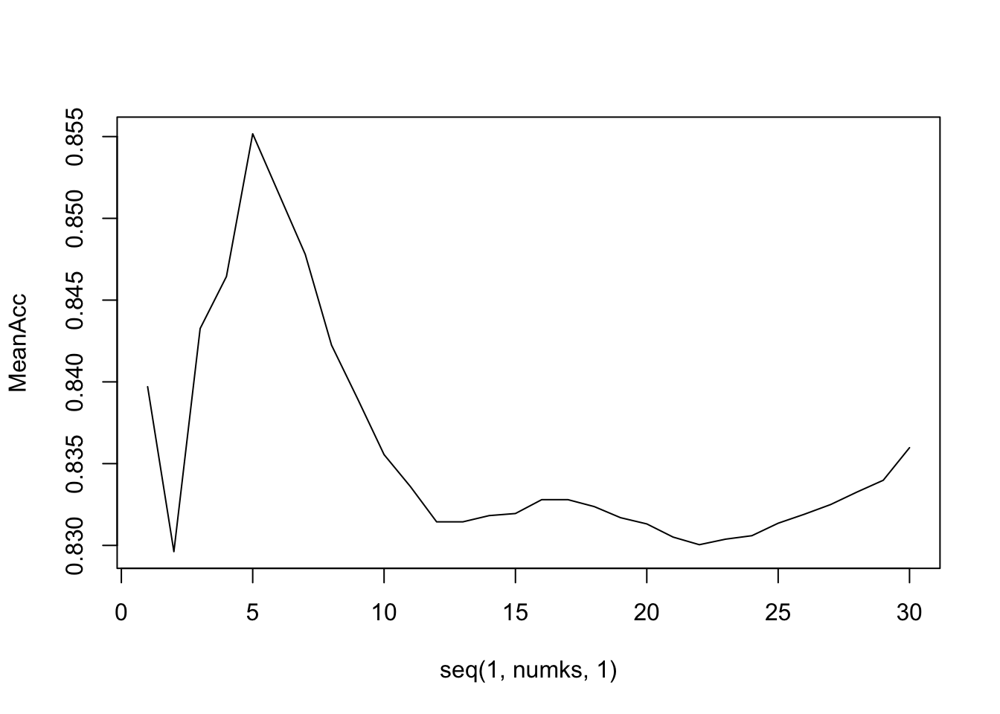
# From this it is clear that the best value for k in our KNN is 5.
# k = 5
trainIndices = sample(1:dim(knn_select_data)[1],round(splitPerc * dim(knn_select_data)[1]))
train = knn_select_data[trainIndices,]
test = knn_select_data[-trainIndices,]
classifications = knn(train[,c(4,5)],test[,c(4,5)],train$Ale_Type, prob = TRUE, k = 5)
table(test$Ale_Type,classifications)## classifications
## IPA Other Ale
## IPA 82 17
## Other Ale 18 119#Confusion Matrix
confusionMatrix(table(test$Ale_Type,classifications))## Confusion Matrix and Statistics
##
## classifications
## IPA Other Ale
## IPA 82 17
## Other Ale 18 119
##
## Accuracy : 0.8517
## 95% CI : (0.7998, 0.8945)
## No Information Rate : 0.5763
## P-Value [Acc > NIR] : <2e-16
##
## Kappa : 0.6959
##
## Mcnemar's Test P-Value : 1
##
## Sensitivity : 0.8200
## Specificity : 0.8750
## Pos Pred Value : 0.8283
## Neg Pred Value : 0.8686
## Prevalence : 0.4237
## Detection Rate : 0.3475
## Detection Prevalence : 0.4195
## Balanced Accuracy : 0.8475
##
## 'Positive' Class : IPA
## # Now We want to look at the decision boundaries
# Create a dataframe to simplify charting
plot.df = data.frame(test, predicted = classifications)
# Use ggplot
# 2-D plots example only
# First use Convex hull to determine boundary points of each cluster
plot.df1 = data.frame(x = plot.df$ABV,
y = plot.df$IBU,
predicted = plot.df$predicted)
find_hull = function(df) df[chull(df$x, df$y), ]
boundary = ddply(plot.df1, .variables = "predicted", .fun = find_hull)
ggplot(plot.df, aes(ABV, IBU, color = predicted, fill = predicted)) +
geom_point(size = 5) +
geom_polygon(data = boundary, aes(x,y), alpha = 0.5) + ggtitle("Prediction Clusters")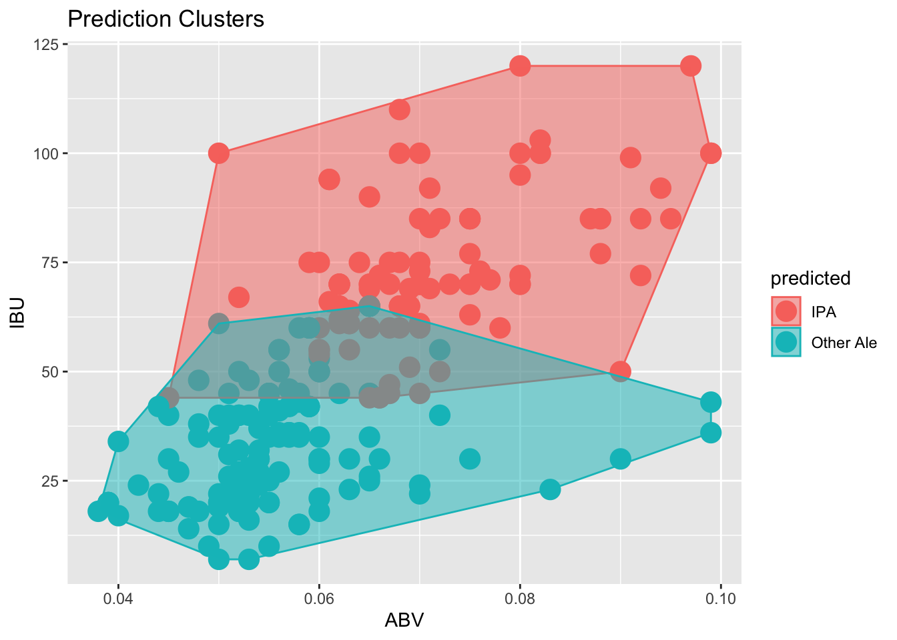
# Based on these clusters, it looks like IBU is a stronger predictor of whether or not an ALE is an IPA or not. Higher IBU has a very strong chance of being an IPA than higher ABV (which still appears to be a positive relationship, just not as strong).